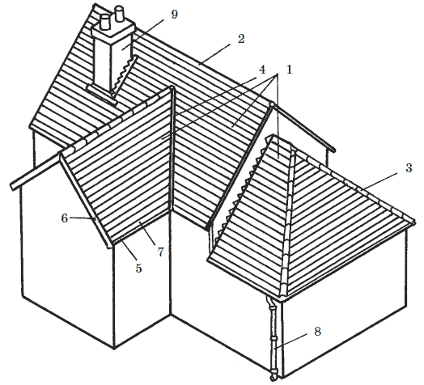

Строение крыши.

Крыша имеет следующие элементы ( рис. 6):

Рис. 6. Строение крыши: 1 – скаты; 2 – конек; 3 – наклонное ребро; 4 – разжелобок; 5 – карнизный свес; 6 – фронтонные свесы; 7 – желоб; 8 – водосточная труба; 9 – дымовая труба
• скаты – (наклонные плоскости);
• конек – самый высокорасположенный внешний угол крыши;
• наклонные ребра – внешние наклонные углы, образующиеся в результате пересечения скатов вальмовых или многощипцовых крыш;
• разжелобки или ендовы, которые также образуются на стыках скатов, но в отличие от ребер имеют внутренне-угловой характер;
• карнизные свесы – горизонтальные свесы по бокам дома;
• фронтонные свесы – наклонные свесы над фронтонной поверхностью;
• система водостока, представленная горизонтальными желобами и вертикальными водосточными трубами;
• дымовая труба.
Карнизные свесы, как правило, образуются стропильными ногами. Существует несколько форм карнизных свесов: свес заподлицо со стеной; карнизный вынос; подшивной свес; кирпичный свес (карниз); свес со сборной железобетонной плитой.
Водосточная система в малоэтажном здании бывает с наружным организованным и неорганизованным водоотводом. В районах с суровыми зимними морозами, когда существует угроза замерзания воды в наружных водосточных системах, может быть рекомендован внутренний водоотвод, когда вертикальные водосточные трубы располагаются внутри здания, вдали от наружных стен, а отвод стоков производится в сеть дворовой канализации.